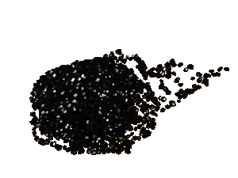

|
Металлургия |
|
| Развитие черной
металлургии в XII веке определило развитие
земледелия и быта, большинства ремесел и
военного дела. Производством железа на Руси
занимались специальные металлурги, проживавшие
в деревнях. Железные руды, в зависимости от их
происхождения встречались в трех видах: бурый
железняк, болотная или луговая руда и руда
озерная. Наиболее широко использовали болотную и
луговую руду. Техника металлургического производства Древней Руси состояла в прямом восстановлении железной руды в железо и дальнейшем насыщении железа углеродом при производстве стали. Этот способ производства стали и железа назывался сыродутным и стал одним из самых важных изобретений в истории человечества: на протяжении почти двух с половиной тысяч лет он служил единственным способом получения черного металла. При сыродутном процессе использовали два типа горнов -- стационарные шахтные печи и печи однора-зового использования. В сыродутном горне при производстве железа одновременно происходят два процесса -- восстановление окиси железа до металлургического железа и ошлаковывание пустой породы. Затем жидкий шлак отделяется от металлического железа. Железо, вынутое из горна, было губчатым и пропитанным шлаком. Поэтому его было необходимо обжимать, для чего, когда оно еще было теплым, использовали деревянные молоты и молоты с каменным бойком на деревянном чурбане или плоском камне. Полученное таким образом железо называли крицей. Наряду с чистым железом в Древней Руси применялась и сталь, которая была трех видов: цементованная (томленая) с однородным строением и равномерно распределенным углеродом, сталь сварочная, неоднородного строения, и сталь сырцовая, науглероженная слабо или неравномерно. Последнюю получали и в сыродутных печах. Сыродутный процесс требовал высококалорийного топлива, которым в Древней Руси являлся древесный уголь. Пережог дров на уголь происходил в лесах и специальных угольных ямах. |
|
Текст и
иллюстрации (c) 1997 Snowball Interactive Entertainment, Inc. |